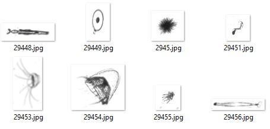

Work in progress: updated 2015-02-15
Introduction
/ Overview
These are rough notes outlining the process used to create
plankton classifiers for the Kaggle National Data Science
Bowl competition, Predict
ocean health, one plankton at a time.
These notes are an attempt to have a defined and repeatable
process.
In brief, the problem is to take 30,336 images from 121
known plankton classes, and create classifier(s) to predict
the class of 130,400 test images.
Sample plankton training images from the class
"acantharia_protist_big_center"

Sample plankton test images from unknown classes

Tutorials
[Windows]
I went through two online tutorials to understand the data and possible processing a bit better:
- Slightly modified version of original tutorial by Aaron Sander: IPython notebook Sander-Kaggle-Plankton-Tutorial.html
- Slightly modified version of tutorial by Ehud Ben-Reuven: IPython notebook BenReuven-Kaggle-Plankton-tutorial-submission.html
Explorations [Windows]
Additional experiments:
- Experiments showing more details than original tutorial: IPython notebook Plankton Explorer.html
- Explore Python’s skimage regionprops for image features: IPython notebook Plankton skimage region properties.html
Duplicate Images [Windows]
Many duplicates images, which were mostly in the test set,
were found by computing and comparing md5sums.
See example duplicates:
- Train: 01-train-duplicates.pdf.
Train images 14864.jpg and 271.jpg, oddly assigned to two
different classes, were found to be duplicates using
script 01-train-md5.R.
- Test: 04-test-duplicates.pdf.
Script 04-test-md5.R proved there were only 93,502
unique images in the set of 130,400. That means
36,898 of the image are duplicates! File
04-Plankton-Test-FileList-Duplicates.csv in the
repository shows all the duplicate files.
- Train-Test:
04-test-train-duplicate.pdf. The link shows
the two pairs of duplicates found between the test and
train sets.
… after getting the complete set of 130,400 test images from a new copy of test.zip, the duplicate count in the test set is now 36,898 -- there are only 93,502 unique test set images. The counts of the number of kinds of duplicates is now:
[1] 93502
counts
1 2 3 4 5 6 7 8 9
71244 12346 6393 2597 684 195 38 4 1
So, 71,244 test images are completely unique. At the
other extreme, there is one case of 9 images being
identically the same. There are four cases of 8 images
being identically the same.
I would have thought minor variations in the test set
(e.g, a variety of rotations of a particular image) would
be a better test strategy than just repeating the same
images so many times. . . .
Example duplicate test images

wndchrm Image Features
Instead of pursuing regionprops for a relatively
small number of additional image properties, a program wndchrm
was found that computes almost 3,000 features for each
image.
The wndchrm command-line utility is described in these two papers:
- Shamir L, Orlov N, Eckley DM, Macura T, Johnston J, Goldberg IG. Wndchrm - an open source utility for biological image analysis. BMC Source Code for Biology and Medicine. 3: 13, 2008. [PubMed].
- Orlov N, Shamir L, Macura T, Johnston J, Eckley DM, Goldberg IG. WND-CHARM: Multi-purpose image classification using compound image transforms. Pattern Recognition Letters. 29(11): 1684-93, 2008. [PubMed].
The current source code can be found on GitHub: wnd-charm,
A generalized pattern recognition system for images
developed by the Goldberg group at the NIH/NIA.
Last
known Windows wndchrm.exe.
Since the latest wndchrm utility is available more
easily under Linux, that version was used, which required
converting all .jpg files to .tifs.
Image Format Conversion [CentOS virtual machine]
wndchrm requires .tif images as input, so ImageMagick was used to convert all the original .jpg images to .tifs.
- Convert train and test images from jpgs to tifs for use with wndchrm: IPython notebook Plankton-Images-Convert-jpgs-to-tifs.html [Train numbers for each of 121 directories – oops directory count was 122. Test total count is 130,400.]
- Fix problems with two directories by re-running conversion for those directories after manually cleaning some directory problems: Convert two notebooks jpg to tif.html
- Count files by train directory to verify correct numbers: Count-Train-Files.html [Train total is 30,336. Corrected train counts by directory: Plankton-Train-Classes.pdf.]
Computation
of Image wndchrm Features [CentOS VM]
- wndchrm accepts tifs but not jpgs, which is why
the step above was to convert images.
- WndCharm Notes (25 pages): WndCharm-Notes.pdf gives details of building Linux version of wndchrm, and creating .sig image feature files for all training and test images.
- View text file 100224-l.sig
with computed features for image 100224.tif.
- Unfortunately, output HTML file from wndchrm for processing training images is about 300 MB, which is too big to be included here or on GitHub.
Create R wndchrm
Train and Test Feature Matrices [Windows]
- Combine all wndchrm .sig output files into single feature matrix for machine learning experiments for the training images (wndchrm-train-data.Rmd). The file plankton-train-wndchrm-features.Rdata is 258 MB in size. See wndchrm-train-data.html
- The features associated with the largest 75 eigenvalues
from SVD analysis of the training data explain about 65%
of variance. See wndchrm-train-svd-pca.html.
The first three principal components of the training
feature matrix can be viewed using the R pca3d package:
First three principal components of training feature
matrix

The file plankton-train-wndchrm-svd-pca.Rdata, which contains computed SVD and PCA results, is nearly 1.7 GB in size.
- Create a similar feature matrix for the test images and save to R .Rdata file (wndchrm-test-data.Rmd). The file plankton-test-wndchrm-features.Rdata is 1.1 GB in size. See wndchrm-test-data.html.
Caret Machine
Learning Experiments [Windows/Linux]
to be continued ...